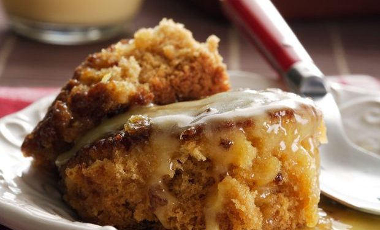

Malva Pudding

Traditional South-African Malva Pudding
South Africa’s favourite winter pudding, with a sweet and creamy butterscotch sauce, gets a quick and easy air fryer twist!
There is nothing better than a warm Malva after dinner to fill up that last little spot before relaxing by the fire and settling in for a nightcap than this South-African Favorite!
Ingrediants
For the Sauce
- 375ml Cream
- 125g Butter
- 250ml Dark Brown Sugar
- 1ml Salt
- 15ml Apricot Jam
For the Pudding
- 30g Butter
- 100ml Dark Brown Sugar
- 45ml Apricot Jam
- 1 Egg
- 5ml Bicarbonite of Soda
- 125ml Milk
- 250ml Cake Flower
- 1ml Salt
- 20ml White Vinager
For the Custard
- 30ml Vanilla Custard Pwder
- 30ml Sugar
- 500ml Milk
Steps
- To make the sauce, place the cream, butter, sugar, salt and Rhodes Quality Apricot Jam in a medium saucepan.
- Stirring continually over a high heat, bring the sauce to the boil.
- Reduce the heat and simmer for two minutes.
- Remove from the heat and keep warm.
- Cream the butter and the sugar together until the butter is pale and soft.
- Beat in the Rhodes Quality Apricot Jam.
- Beat in the egg.
- Dissolve the bicarbonate of soda into the milk.
- Sift the cake flour and the salt together and add to the batter, alternating with the milk.
- Beat in the vinegar.
- Spoon the batter into an air fryer suitable pudding bowl/s that have been sprayed with non-stick spray.
- Pour half of the sauce over the batter.
- Pre-heat the air fryer on bake to 170°C and bake the pudding for 30 minutes.
- Remove from the air fryer and pour over the remaining sauce a little at a time until all the sauce is absorbed by the hot pudding.
- To prepare the custard, mix Hinds Vanilla Custard powder, sugar and 45 ml (3 Tbsp.) of the milk together.
- Bring the remaining milk to the boil in a saucepan.
- Pour the custard mix into boiling milk, stirring well until thickened.
- Serve the malva pudding warm with the custard